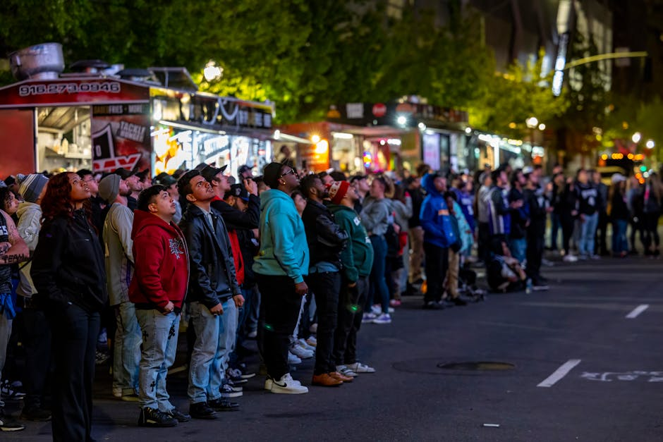
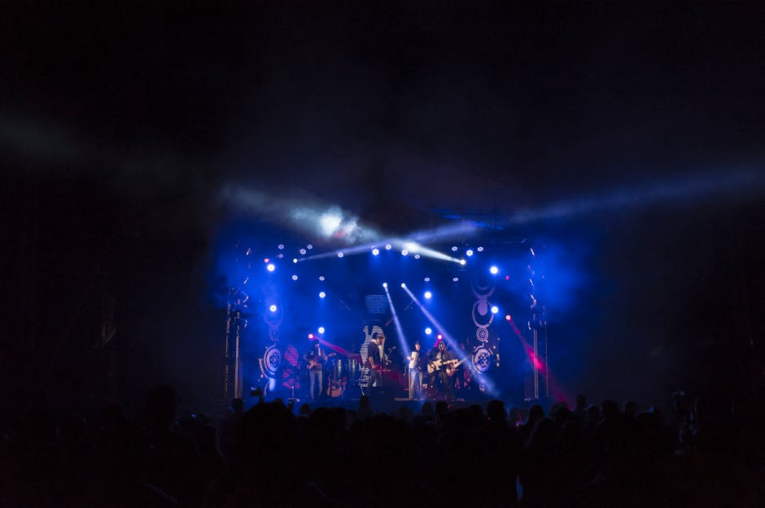
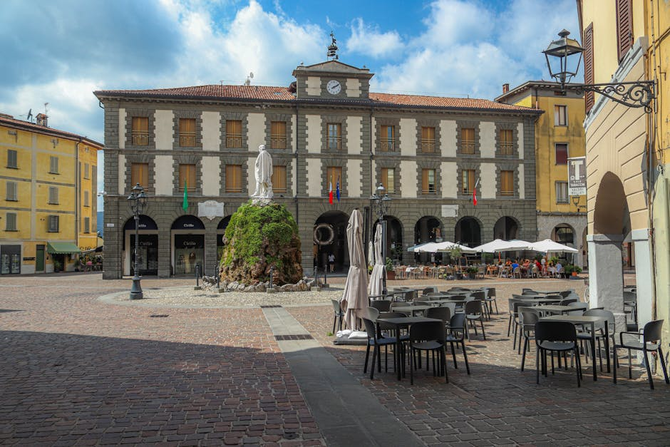

Azrael Stack è il tuo portale dedicato alle sagre paesane, ai festival musicali e agli eventi culturali più autentici. Vivi le tradizioni locali come mai prima d'ora.

La guida completa per non perderti i migliori appuntamenti enogastronomici e culturali del territorio.
Trova le migliori sagre dove gustare i prodotti tipici, celebrare le tradizioni culinarie e vivere l'atmosfera festosa delle piazze di paese.
Resta sempre aggiornato sui concerti dal vivo, i festival musicali indipendenti e le serate danzanti che animano i borghi durante tutto l'anno.

Scopri l'artigianato locale, le rievocazioni storiche e le fiere locali che celebrano e preservano l'identità profonda del nostro territorio.

Azrael Stack nasce dalla profonda passione per le tradizioni locali e la convivialità. Selezioniamo con cura le informazioni sulle sagre paesane, i festival musicali e gli eventi culturali per offrirti una guida completa e affidabile alle eccellenze del territorio.
Il nostro obiettivo è valorizzare il patrimonio enogastronomico e culturale locale, mettendo in contatto chi ama scoprire nuovi sapori e tradizioni con le realtà autentiche che animano le nostre piazze. Che tu stia cercando una fiera dell'artigianato o un concerto all'aperto, siamo qui per guidarti.
Tutto quello che devi sapere sul nostro portale eventi.
"Grazie a questo portale ho scoperto sagre paesane fantastiche a pochi chilometri da casa. Ora so sempre dove andare la domenica!"
— Mario R., 2026
"Ottima risorsa per trovare festival musicali e concerti durante il weekend. Il sito è molto chiaro e i suggerimenti sono sempre validi."
— Giulia B., 2026
"Una guida indispensabile per chi ama le fiere locali e gli eventi culturali. Consigliatissimo a tutti gli appassionati del territorio."
— Luca T., 2026
Conosci una sagra o un festival che non è ancora sul nostro portale? Scrivici!